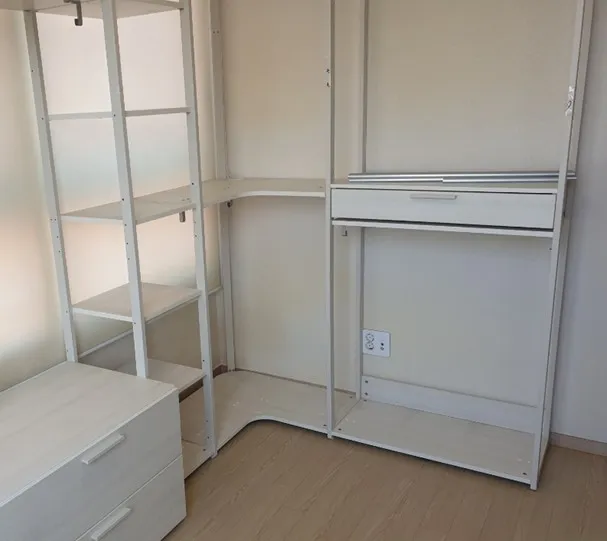

Brand · IKEA
이케아 시스템행거
이전설치
직접 조립한 행거, 다시 분해해서 옮기려니 막막하셨다면.
이케아 수납 시스템은 바닥에 세우는 프레임형, 벽에 거는 레일형 등 형태가 여러 가지이고, 직접 조립해 쓰는 경우가 많습니다. 조립할 때는 설명서가 있었지만 분해할 때는 순서가 헷갈리고, 나사나 연결 부품이 섞이면 새 집에서 다시 조립하기 어렵습니다.
코니처는 조립된 상태를 보고 분해 순서를 정해 부품을 칸별로 정리하고, 새 공간에서 흔들리지 않게 다시 조립합니다. 이케아 공식 서비스와는 관계없는 이전설치 전문 업체입니다.

Situations
이런 경우 맡기시면 편합니다
설명서를 잃어버렸을 때
조립된 모습을 보고 역순으로 분해합니다.
벽 고정 부품이 있을 때
넘어짐 방지 고정을 먼저 풀고 새 벽에도 다시 고정합니다.
새 집 높이가 다를 때
선반 높이를 조정해 새 공간에 맞춥니다.
부품을 추가로 샀을 때
준비하신 추가 부품까지 함께 조립합니다.
Checklist
분해 전에 확인할 것
| 항목 | 확인 내용 | 필요한 이유 |
|---|---|---|
| 설치 형태 | 바닥 프레임형인지 벽 레일형인지 | 분해 방법이 다릅니다 |
| 벽 고정 | 넘어짐 방지 고정 여부 | 고정 부분을 먼저 풀어야 합니다 |
| 연결 부품 | 나사·핀·브래킷 수량 | 재조립 때 빠지는 부품이 없게 합니다 |
| 서랍·바구니 | 레일 부착 위치 | 위치를 기록해 둡니다 |
| 새 공간 | 벽 재질, 폭, 높이 | 다시 고정할 방법을 정합니다 |
Process
분해·재조립 순서
사진 확인
조립된 모습 사진으로 구조를 확인합니다.
부품 기록
칸별로 사진을 찍고 연결 부품을 봉투에 나눠 담습니다.
분해
벽 고정을 풀고 위에서부터 분해합니다.
재조립
새 공간에서 프레임부터 다시 조립합니다.
벽 고정·점검
넘어짐 방지 고정 후 흔들림을 확인합니다.
FAQ
자주 묻는 질문
직접 조립한 거라 부품이 좀 없어요
빠진 부품이 있어도 먼저 사진으로 보여주세요. 재조립에 꼭 필요한 부품인지 확인해 알려드립니다.
분해만 먼저 할 수 있나요?
네, 이사 전 분해와 새 집 조립을 다른 날로 나눠 진행할 수 있습니다.
벽에 꼭 고정해야 하나요?
높이가 있는 프레임형은 넘어짐을 막기 위해 벽 고정을 권합니다. 새 벽 재질에 맞는 방법으로 고정합니다.
조립된 채로 옮기면 안 되나요?
작은 것은 가능할 때도 있지만, 문과 복도를 지나며 연결부가 틀어지기 쉬워 분해를 권합니다.
이케아에서 보내는 기사인가요?
아닙니다. 코니처는 브랜드와 관계없이 가구 이전설치를 하는 업체입니다.